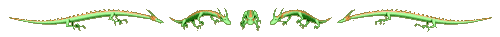
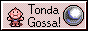
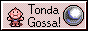

before you enter
This website requires Javascript in order to function properly! Contains trace amounts of iframes.
This site also has sound effects for hovering and clicking links.
Created on Windows for a 1920x1080 screen resolution (in Firefox), but should (hopefully) be somewhat mobile responsive.


Intended for an adult audience. Although uncommon, select portions may be 18+ only.
enter the den...
I'm updated on the regular! If anything appears broken, please try hard refreshing.


 
